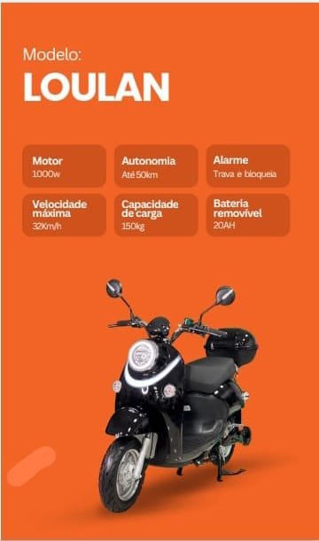
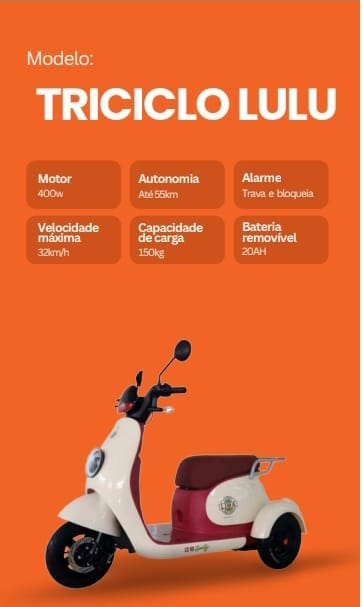

Mais cidade.
Mais liberdade.
Conheça motos elétricas e triciclos, compare características e chame a equipe para confirmar a versão ideal para você.

SENA
ELÉTRICA
Um modelo para
cada percurso.
Compare os dados informados no catálogo e monte uma seleção para consultar com a equipe.
Fotos e especificações reproduzem informações do catálogo do WhatsApp da Moto Sena. Autonomia é estimada; confirme modelo, versão, preço e disponibilidade com a equipe.

Compare o que
faz sentido pra você.
Potência, autonomia, capacidade e conforto ajudam a orientar a escolha. A equipe Moto Sena confirma os detalhes de cada unidade.
- Potência e autonomiaConfira a versão
- Bateria e recargaConsulte a equipe
- Garantia e assistênciaConfirme condições
- Preço e disponibilidadeSob consulta
Comece pelo seu uso.
Veja as categorias disponíveis e compare os modelos antes de chamar a loja.
Atendimento
de ponta a ponta.
Fale com a equipe comercial sobre modelos, preço e disponibilidade. Para assistência técnica, use o canal dedicado.
Falar com vendas ↗Visite a loja
ou fale com a equipe.
Av. Abílio Augusto Távora, 1111 — Luz, Nova Iguaçu — RJ. Confirme horário de atendimento e disponibilidade antes de visitar.